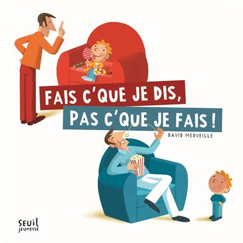
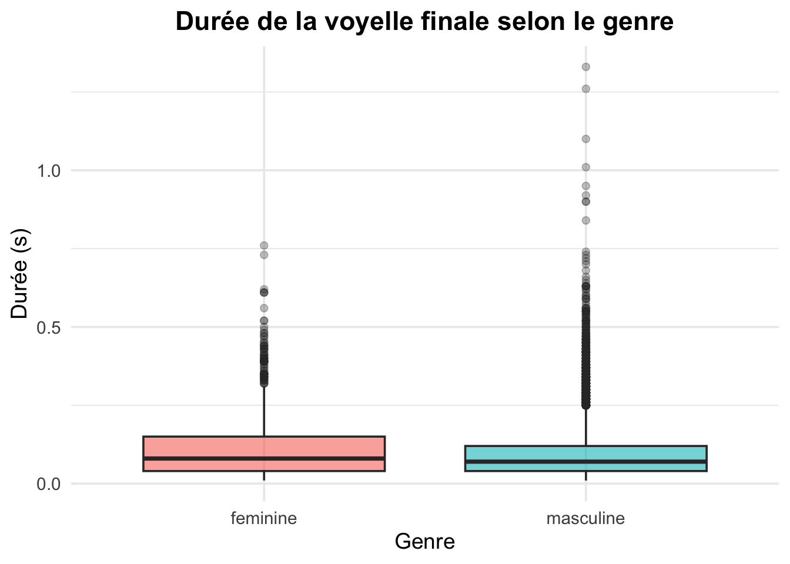
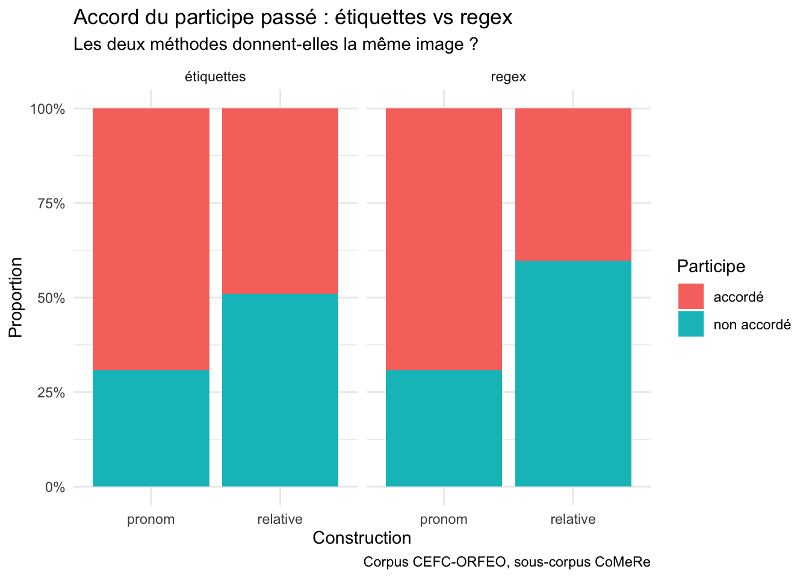
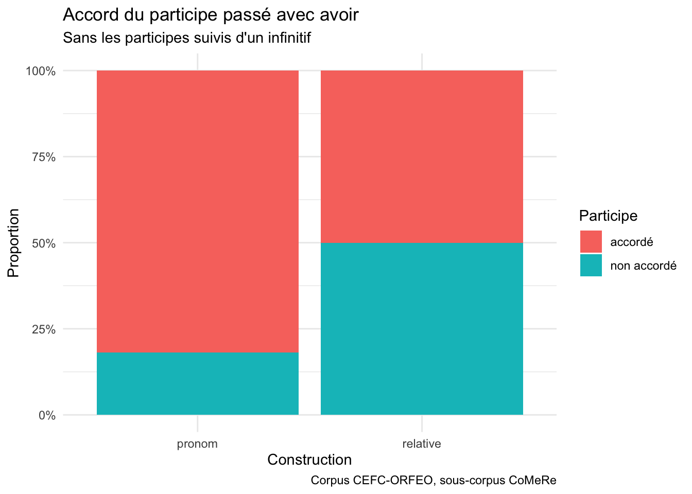
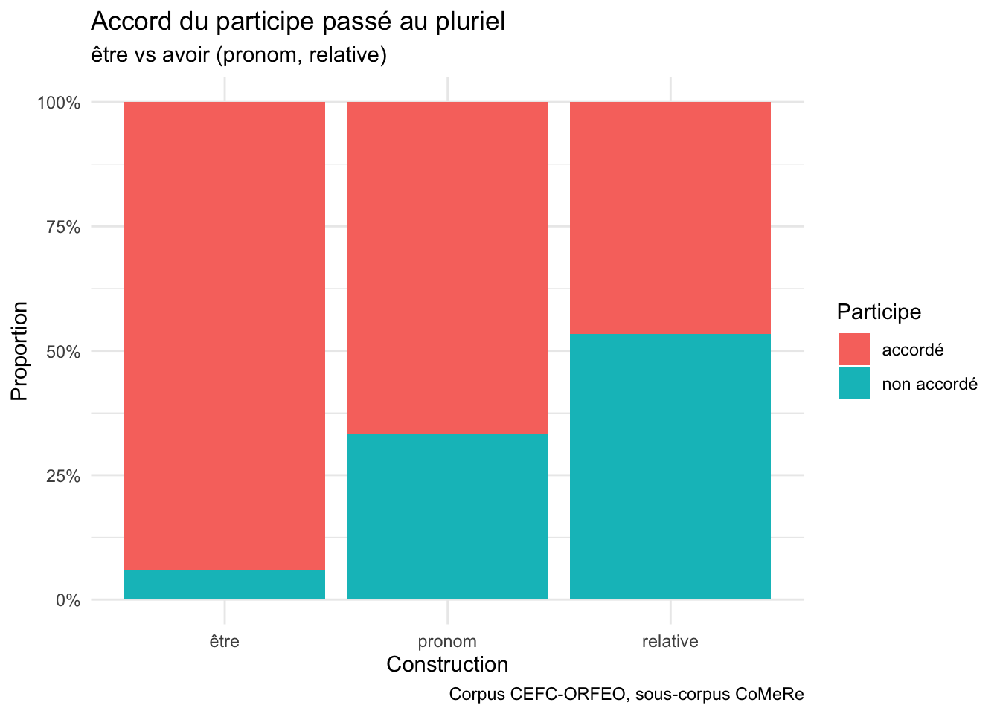

La note finale (/20) est calculée ainsi : présentation (/10) × 0,5 + travail écrit (/20) × 0,75.
4.1.1 Présentation orale – 25 % (/10)
Chaque étudiant·e présente son travail individuellement pendant environ 15 minutes. Les présentations ont lieu sur deux séances :
mercredi 9 décembre : 5 présentations ;
mercredi 16 décembre : 6 présentations.
Si vous avez une préférence pour l’une des deux dates, signalez-la-moi par email. Premier arrivé, premier servi.
Table 1: Grille d’évaluation de la présentation (total : /10)
Critère
Niveau 1 (0)
Niveau 2
Niveau 3
Communication claire et expression correcte (/2)
La présentation est désorganisée ou difficile à suivre. L’expression contient de nombreuses erreurs.
(+1) La présentation est globalement claire mais parfois confuse ou déséquilibrée. L’expression contient quelques erreurs.
(+2) La présentation est claire, structurée et fluide. L’expression est correcte et le registre adapté.
Cadre théorique (/2)
Le cadre théorique est absent, mal compris ou sans lien avec le cours.
(+1) Le cadre théorique est présenté mais reste superficiel. Le lien avec la question de recherche est peu clair.
(+2) Le cadre théorique est présenté de manière claire et pertinente, et il mène logiquement à la question de recherche.
Méthodologie (/2)
La méthodologie n’est pas présentée ou est inadaptée.
(+1) La méthodologie est présentée, mais de façon incomplète ou imprécise.
(+2) La méthodologie (données, collecte, analyse) est présentée clairement et justifiée.
Analyse linguistique du phénomène (/2)
Le phénomène est mal décrit ou l’analyse contient des erreurs importantes.
(+1) Le phénomène est décrit correctement, mais l’analyse reste partielle ou peu précise.
(+2) Le phénomène est analysé de manière correcte, précise et appuyée par les données.
Réponse à la question de recherche (/2)
La présentation n’apporte pas de réponse claire à la QR, ou la réponse n’est pas reliée au cadre théorique.
(+1) Une réponse à la QR est donnée, mais sa portée est mal délimitée : les limites de ce que montrent les données sont peu claires, ou le lien avec le cadre théorique reste superficiel.
(+2) La réponse à la QR est claire. La présentation délimite précisément ce que la réponse apporte et ce qu’elle ne permet pas de conclure, et elle replace la réponse dans le cadre théorique.
4.1.2 Travail écrit – 75 % (/20)
Le travail est à envoyer par e-mail à jeremy.genette@kuleuven.beavant le mardi 12 janvier 2027 à midi (heure belge).
Format : un fichier PDF de 3500 à 4000 mots, bibliographie excluse.
Fichiers d’analyse : joignez tous les fichiers utilisés pour l’analyse (données ou lien d’accès, annotations, scripts, tableaux de résultats).
README : ajoutez un fichier README qui décrit le rôle de chaque fichier, par exemple « donnees.csv contient les occurrences extraites du corpus ; analyse.R produit les tableaux et les figures de la section 4 ».
Si vous travaillez dans Google Colab : téléchargez votre notebook (.ipynb) ou copiez-collez l’ensemble de vos lignes de code dans un fichier script (.R ou .py) à joindre à l’envoi.
Grille d’évaluation du travail écrit (total : /20)
Critère
Niveau 1 (0)
Niveau 2
Niveau 3
Niveau 4
Cadre théorique et question de recherche (/2)
Le cadre théorique n’est pas pertinent pour le cours. La littérature est absente ou mal comprise. La question de recherche (QR) n’est pas clairement formulée.
(+1) Le cadre est en partie pertinent. La littérature est mobilisée, mais son explication reste floue. La QR est formulée mais ne découle pas clairement de la littérature.
(+2) Les références choisies sont très pertinentes et discutées de façon critique. La QR est clairement formulée et fondée sur la littérature.
/
Justification de la pertinence de l’étude (/1)
La pertinence de l’étude n’est pas justifiée.
(+0,5) La pertinence est évoquée, mais de façon vague ou sans lien explicite avec les thématiques du cours.
(+1) La pertinence est clairement argumentée : lacune dans la littérature, apport scientifique attendu, lien avec les thématiques du cours.
/
Méthodes et design de recherche (/3)
Les données ne sont pas adaptées à l’étude du phénomène visé. Le travail ne montre pas comment elles peuvent répondre à la QR.
(+1) Les données sont en partie pertinentes. La QR est partiellement traitée.
(+2) L’étude est bien conçue. Les données sont clairement présentées et analysées en profondeur. Le travail répond en partie à la QR.
(+3) L’étude est innovante et menée avec soin. Les données sont clairement présentées. L’analyse est approfondie et apporte de nouveaux éclairages. Le travail répond de manière satisfaisante à la QR.
Sélection/collecte des données et compte rendu (/3)
Il n’y a pas d’étude empirique indépendante, ou la recherche n’est pas scientifique ou pas éthique.
(+1) La collecte suit les consignes, mais des informations cruciales manquent. La méthode est en partie inadaptée.
(+2) Les règles scientifiques et éthiques sont respectées. La collecte est clairement décrite. La méthode est adaptée.
(+3) La méthode est innovante et pleinement conforme aux exigences scientifiques et éthiques. La description permet la réplication. La méthode conduit à des résultats nouveaux.
Problèmes rencontrés et stratégies de compensation (/3)
Les problèmes rencontrés (qualité des données, annotation difficile, données manquantes, etc.) ne sont pas identifiés.
(+1) Des problèmes sont identifiés, mais aucune stratégie de compensation n’est mise en œuvre.
(+2) Les problèmes sont clairement identifiés. Des stratégies de compensation adaptées sont mises en œuvre.
(+3) Les problèmes sont identifiés de manière fine. Des stratégies de compensation adaptées sont mises en œuvre, documentées et justifiées, et leur effet sur les résultats est évalué.
Workflow d’analyse et fichiers fournis (/1)
Le workflow n’est pas documenté et les fichiers d’analyse ne sont pas fournis.
(+0,5) Le workflow est partiellement documenté ou les fichiers sont fournis de manière incomplète. La reproductibilité est incertaine.
(+1) Le workflow est documenté dans un README et entièrement reproductible. Tous les fichiers sont fournis et organisés : données (ou lien d’accès), annotations, scripts d’analyse et tableau de résultats.
/
Limites et pistes de recherche (/3)
Aucune limite n’est identifiée.
(+1) Des limites sont identifiées, mais de façon superficielle. Leur impact sur les résultats n’est pas discuté.
(+2) Les limites sont clairement identifiées et leur impact sur les résultats est discuté. Quelques pistes de recherches futures sont évoquées.
(+3) Les limites sont discutées de manière critique et approfondie. Des pistes concrètes et pertinentes de recherches futures sont proposées, en lien avec la QR.
Communication scientifique écrite, références comprises (/4)
(0–1) Le texte contient de nombreuses fautes. Le style n’est pas scientifique, la structure n’est pas conforme aux exigences académiques et les références sont mal citées.
(+2) Le texte contient quelques fautes. Le style est peu scientifique, la structure académique est partiellement respectée et les références sont mises en forme de manière incohérente.
(+3) Le texte ne contient presque pas de fautes. Le style est scientifique, la structure académique est respectée et les références sont correctement mises en forme.
(+4) Le texte ne contient aucune faute et se lit avec fluidité. Les figures et tableaux sont légendés et commentés, et les références sont citées de manière irréprochable.
4.2 Introduction - le discours publique
4.2.1 Le ministre de l’Éducation nationale français à la radio.
L’accord du participe passé: ” Il n’y a rien de plus important ny de plus ignoré.”
— Claude Favre de Vaugelas (Grammairien), 1647
Claude Favre de Vaugelas, Grammairien (1586-1650)
“La règle est morte de complications.”
— Lucien Tesnière (Linguiste), 1959
Lucien Tesnière, Linguiste (1893-1954)
4.3 Histoire du participe passé
4.3.1 Jusqu’au XIIIe siècle
L’ordre des mots est relativement libre:
Si auxiliaire être: accord avec le sujet
Si auxiliaire avoir: accord avec le COD, peu importe sa position dans la phrases
Ex. J’ai les lettres écrites.
Ex. J’ai écrites les lettres.
le participe passé s’accordait alors comme un attibut de l’objet: par exemple, j’ai les mains salies
4.3.2 XVIe siècle
L’ordre des mots devient plus figé auxiliaire - participe - objet:
Si auxiliaire être: accord avec le sujet
L’accord avec avoir est en diminution
Clément Marot Épigrammes dédiées à François Ier, 1538
Il propose d’accorder le participe passé avec l’objet si ce dernier est placé avant le participe passé sur la base du modèle italien 🍝
Ex. Dieu nous a faictz <–> Dio noi a fatti
Clément Marot, Poète français (1496-1544)
L’usage de cette règle n’est pas encore systémique
Mignonne, allons voir si la rose
Qui ce matin avait desclose
Sa robe de pourpreau soleil…
Pierre de Ronsard, Poète français (1524-1585)
4.3.3 XVIᵉ siècle : un accord qui ne s’entend plus
On n’entend plus l’accord car on ne prononce plus le ‑s final.
Ex. Je les ai vus /ʒə lez e vy/
Sauf en cas de liaison :
Ex. Je les ai vus à la fête /ʒə lez e vyz a la fɛt/
La distinction de genre au participe passé ne s’entend plus à l’oral, à l’exception d’une trentaine de verbes du 3ᵉ groupe (ex. mise, prise, faite, dite).
Environ 99 % des participes passés n’ont aucune distinction phonique au féminin.
🚨 Français de Belgique
4.4 Les règles académiques
Vaugelas restreint l’application de la règle d’accord du participe passé précédé de son COD (règle de Marot).
L’accord s’effectue uniquement lorsque le participe passé se trouve en fin de phrase.
Cas d’invariabilité du participe passé (si suivi d’un autre élément) :
Suivi d’un attribut : « les habitans nous ont rendu maistres de la ville »
Suivi d’un complément prépositionnel : « les maux qu’il a fait à son fils »
Suivi d’un sujet inversé : « la peine que m’a donné cette affaire »
Suivi d’un infinitif : « je l’ai fait peindre »
Pourquoi ?
Sans doute qu’on pouvait encore entendre l’allongement caractéristique du féminin, mais seulement en fin de phrase.
Cela s’entend encore aujourd’hui en fin de phrase, en Belgique ou en Suisse.
L’abbé d’Olivet préconise d’accorder le participe passé suivi d’un infinitif :
« Je les ai convaincus de venir »
Distinction selon l’agent de l’action :
Accord : Le sujet fait l’action de l’infinitif (le COD est l’agent de l’infinitif).
« On les (les chanteurs) a entendus chanter » (on a entendu les chanteurs chanter)
Invariabilité : Le sujet ne fait pas l’action de l’infinitif (le COD n’est pas l’agent de l’infinitif).
« On les (les chants) a entendu chanter » (on a entendu les chants chanter)
Exception pour faire :
Le participe passé du verbe faire suivi d’un infinitif reste systématiquement invariable dans tous les cas :
« Je les ai fait peindre »
Sur le site de l’Académie
La règle de l’accord avec le COD qui précède le verbe a six exceptions :
si l’objet est en
si l’objet est un complément de mesure : les 100 mètres que j’ai couru
oui mais pas si figuré : les 100 mètres que j’ai courus
quand il est objet de l’infinitif : les chants que j’ai entendu chanter
quand le verbe est impersonnel
faire + infinitif
Pourquoi c’est bizarre ?
Rupture avec la règle générale :
Dans tous les autres cas, les formes verbales s’accordent avec le sujet.
Dépendance à la position :
L’accord en général ne se fait pas en fonction de la position des mots dans la phrase.
4.4.1 Les verbes pronominaux
Extension de la règle d’accord au XVIIIᵉ siècle :
Au XVIIIᵉ siècle, l’Académie française étend l’accord avec l’objet qui précède aux verbes pronominaux.
Exemple : « Les choses qu’elle s’est dites. »
Règles d’invariabilité :
Le participe passé reste donc invariable si l’objet suit le verbe ou s’il s’agit du pronom en.
Sur le site de l’Académie française, l’accord du participe passé des verbes pronominaux suit plusieurs règles selon la fonction syntaxique du pronom se :
Absence d’accord lorsque le pronom se n’est pas complément :
Le participe passé ne s’accorde pas lorsque le pronom se n’est pas un complément d’objet direct (ce qui s’apparente au fonctionnement des verbes essentiellement pronominaux).
Exemples :
« Ils se sont souvenu. »
vs
« La propriété s’est vendue à bas prix. »
Accord lorsque le pronom se peut être analysé comme un complément :
Quand le pronom se est analysé comme un complément, le verbe pronominal suit les règles d’accord de l’auxiliaire avoir.
Exemples :
« Elles se sont lavées les mains. »
« Ils se sont succédé. »
« Ils se sont vu accorder des congés. »
« Ils se sont vus accorder des congés à leurs employés. »
4.5 Les règles scolaires
L’introduction de règles artificielles au XIXe siècle
Accord selon le pronom COD :
« Les pommes, je les ai mangées » (accord avec le COD les).
« Des pommes, j’en ai mangé » (invariabilité avec le pronom en).
Accord selon la valeur du complément :
« La somme que j’ai payée » (accord car que est COD).
« La somme que ça m’a coûté » (invariabilité car que est complément de prix/mesure).
« L’accord du participe passé avec avoir est la règle la plus artificielle de la langue française. » - Louis-Nicolas Bescherelle
En 1900, Georges Leygues publie un arrêté visant à simplifier l’enseignement de la syntaxe française.
Mais l’Académie est fâchée !
Que méchant GIF - Découvrez sur GIFER
L’arrêté est supprimé en 1901.
1996, Arrêté Haby
Régularise l’accord du participe passé.
Tolérance étendue aux cas complexes : pronom en, complément de mesure, participes suivis d’un infinitif.
1990 — Rectifications orthographiques
Autorise l’invariabilité du participe passé de laisser suivi d’un infinitif : « les enfants que j’ai laissé partir »
4.5.1 Les verbes pronominaux
Au XIXᵉ siècle, les verbes pronominaux suivent les règles d’accord académiques, qui comptent au moins trois cas de figure :
Accord avec le sujet : « Elle s’est lavée. »
Invariabilité si l’objet direct suit le verbe : « Elle s’est lavé les mains. »
Accord avec l’objet direct si celui-ci précède le verbe : « Les mains qu’elle s’est lavées. »
La tentative de réforme de 1900 et la réaction académique :
En 1900, le ministre Georges Leygues, qui propose l’invariabilité du participe passé avec l’auxiliaire avoir, la propose également pour les verbes pronominaux.
Face à la réaction de l’Académie française, cette proposition est de nouveau abandonnée.
4.6 Les usages littéraires
Observations influencées par éditeurs et correcteurs.
Dans Les Femmes savantes, pas toujours accordé :
« jamais il ne m’a prié de lui rien dire » (une femme parle)
« des vers de vous qu’il n’a point trouvé beaux » - corrigés en trouvés dans les édtions modernes.
Les femmes savantes : Molière, Michel, Lise: Amazon.com.be: Livres
« as‑tu vu la tête qu’il a fait quand il s’est aperçu qu’elle n’était pas là »
Marcel Proust — Wikipédia
« mais je n’avais ni les dons ni les connaissances techniques qu’il eût fallus »
Paul Valéry — Wikipédia
Qui ne respecte pas l’accord avec en ?
La Fontaine (académicien)
Georges Duhamel (académicien)
Alphonse Daudet
Marguerite Duras
Qui ne respecte pas l’accord avec les verbes de mesure ?
Racine (académicien)
Honoré de Balzac
Joseph Kessel (académicien)
L’accord du participe suivi d’un infinitif ?
Racine (académicien) n’accorde pas toujours.
Corneille (académicien) accorde toujours.
Corneille et Racine – Traits caractéristiques – À la française …
4.6.1 Les verbes pronominaux
Les écrivains accordent le participe passé plus souvent que les règles académiques ne le recommandent.
Exemples :
Molière : « ils se sont donnés l’un à l’autre une promesse de mariage »
Proust : « ils ne s’étaient rendus compte de rien »
Montesquieu : « dynasties qui se sont succédées »
Simone Veil : « s’étaient succédés »

Cas où l’Académie recommande l’accord
Senancour : « les maux qu’il s’est fait »
Et quand le verbe pronominal est suivi d’un infinitif… encore plus de “problèmes”
Voltaire (académicien) : « sa fille qui s’était faite enlever »
4.7 Les usages ordinaires
XIXᵉ–XXᵉ siècles : les grammaires notent que le participe passé avec avoir reste le plus souvent invariable.
Grevisse : « pente instinctive vers l’invariabilité »
Tesnière : « aujourd’hui l’accord préconisé par la grammaire ne se fait plus même dans la langue parlée courante des personnes cultivées. On dit sans sourciller : la lettre que j’ai écrit. »
Grammaire méthodique du français : tendance actuelle à l’invariabilité.
GGF : la question se pose surtout à l’écrit ; le masculin tend à se généraliser.
4.8 Les usages robustes
4.8.1 Dans les corpus oraux
CORPAIX
Avec avoir + objet antéposé :
33 % avec pronom de 3ᵉ pers
64 % quand le participe est en position finale
24 % avec pronom relatif que
On suivrait donc plutôt la règle de Vaugelas.
4 corpus oraux
Accord au féminin dans 90 % des cas avec être
50 % avec avoir (60 % en position finale)
4.8.2 Dans les corpus écrits
Sur Reddit : sur 400 adultes… suivent les règles normatives.
30
L’invariabilité est majoritaire surtout quand on n’entend pas l’accord.
Alors que la majorité des messages est suffisament formelle pour inclure la négation bipartite.
4.8.3 Dans la grammaire mentale ?
Jugement d’acceptabilité (2024–2025) :
200 adultes monolingues
48 phrases avec ou sans accord
Échelle 0–10
Résultats :
Accord : 7,5
Sans accord : 6,8
Différence faible
Et l’italien de Marot ?
Généralisation de l’invariabilité :
le cose che ho letto
Italian Hand GIFs | Tenor
4.8.4 Les verbes pronominaux
Quand l’accord est audible : 80 % des verbes pronominaux sont accordés.
Favorisé par les constructions pronominales de sens passif.
Avec se objet indirect : usage instable.
On lit de plus en plus : « elle s’est faite avoir »
On entend : « je me suis permise de vous appeler »
En d’autres termes : l’accord avec le sujet est la règle la plus robuste de l’usage.
Et l’italien de Marot ?
Généralisation de l’accord avec le sujet :
si è lavata le mani
Italian Hand GIFs | Tenor
4.8.5 Synthèse (autant que possible)
graph TD Q1["🧐 Y a-t-il un auxiliaire ?"] %% Branch: PP employé seul Q1 -->|"Non"| PP_SEUL["👉 PP employé seul"] PP_SEUL --> ACC_NOM["Accord en genre et en nombre avec le nom auquel il se rapporte.<br>🚨 Exceptions"] %% Branch: Avec quel type de verbe ? Q1 -->|"Oui"| Q2["🧐 Avec quel type de verbe ?"] %% Sub-branch 1: Avec avoir Q2 --> AVOIR["👉 Avec avoir"] AVOIR --> Q3["🧐 Y a-t-il un COD/CDV ?"] %% Sub-branch 2: Pronominal Q2 --> PRONOMINAL["👉 Pronominal"] PRONOMINAL --> Q4["🧐 verbe essentiellement pronominal ?"] Q4 -->|"Oui"| OUI_PRON["👉 Oui"] Q4 -->|"Non"| NON_PRON["👉 Non"] NON_PRON --> Q3 %% Sub-branch 3: Avec être Q2 --> ETRE["👉 Avec être"] %% COD / CDV Decision Paths Q3 -->|"Oui"| COD_OUI["👉 Oui"] Q3 -->|"Non"| COD_NON["👉 Non"] COD_OUI --> Q5["🧐 Où ?"] Q5 -->|"devant le verbe"| DEVANT["👉 devant le verbe"] Q5 -->|"derrière le verbe"| DERRIERE["👉 derrière le verbe"] DEVANT --> ACC_COD["Accord en genre et en nombre avec le COD/CDV.<br>🚨 Exceptions"] DERRIERE --> PP_INVAR["PP Invariable"] COD_NON --> PP_INVAR %% End nodes OUI_PRON --> ACC_SUJET["Accord en genre et en nombre avec le sujet.<br>🚨 Exceptions"] ETRE --> ACC_SUJET
graph TD
Q1["🧐 Y a-t-il un auxiliaire ?"]
%% Branch: PP employé seul
Q1 -->|"Non"| PP_SEUL["👉 PP employé seul"]
PP_SEUL --> ACC_NOM["Accord en genre et en nombre avec le nom auquel il se rapporte.<br>🚨 Exceptions"]
%% Branch: Avec quel type de verbe ?
Q1 -->|"Oui"| Q2["🧐 Avec quel type de verbe ?"]
%% Sub-branch 1: Avec avoir
Q2 --> AVOIR["👉 Avec avoir"]
AVOIR --> Q3["🧐 Y a-t-il un COD/CDV ?"]
%% Sub-branch 2: Pronominal
Q2 --> PRONOMINAL["👉 Pronominal"]
PRONOMINAL --> Q4["🧐 verbe essentiellement pronominal ?"]
Q4 -->|"Oui"| OUI_PRON["👉 Oui"]
Q4 -->|"Non"| NON_PRON["👉 Non"]
NON_PRON --> Q3
%% Sub-branch 3: Avec être
Q2 --> ETRE["👉 Avec être"]
%% COD / CDV Decision Paths
Q3 -->|"Oui"| COD_OUI["👉 Oui"]
Q3 -->|"Non"| COD_NON["👉 Non"]
COD_OUI --> Q5["🧐 Où ?"]
Q5 -->|"devant le verbe"| DEVANT["👉 devant le verbe"]
Q5 -->|"derrière le verbe"| DERRIERE["👉 derrière le verbe"]
DEVANT --> ACC_COD["Accord en genre et en nombre avec le COD/CDV.<br>🚨 Exceptions"]
DERRIERE --> PP_INVAR["PP Invariable"]
COD_NON --> PP_INVAR
%% End nodes
OUI_PRON --> ACC_SUJET["Accord en genre et en nombre avec le sujet.<br>🚨 Exceptions"]
ETRE --> ACC_SUJET
Applications : les expressions régulières
4.9 Une regex, c’est quoi ?
Une expression régulière (regex) est un motif qui décrit une famille de chaînes de caractères.
Ces exercices se font sur papier, sans ordinateur. Une regex « correspond » à un mot si le motif se trouve quelque part dans le mot, comme avec grepl() en R.
Symbole
Sens
Exemple
.
n’importe quel caractère
p.s : pas, pis
^
début du mot
^re : repris
$
fin du mot
ée$ : mangée
?
le caractère précédent est optionnel
ées?$ : mangée, mangées
*
0 fois ou plus
ah* : a, ah, ahhh
+
1 fois ou plus
ah+ : ah, ahhh
[...]
un caractère parmi la liste
[iu]e$ : finie, vendue
[^...]
un caractère sauf ceux de la liste
[^i]s$ : mangés, pas pris
(a|b)
a ou b
(é|i)$ : mangé, fini
4.14 Exercice : quels mots correspondent ?
Pour chaque regex, entourez les mots de la liste qui correspondent.
Liste : mangé · mangée · mangées · finis · prise · pas · repas · passé · été · parlé · rendu · ouvert
e$
^pas
pas
és?$
[iu]s?$
^...$
(ert|ise)$
4.15 Corrigé : quels mots correspondent ?
Exercice 1
e$ : mangée, prise
^pas : pas, passé
pas : pas, repas, passé
és?$ : mangé, passé, été, parlé (pas mangées : le é n’est pas suivi directement de la fin ou d’un s final)
[iu]s?$ : finis, rendu
^...$ : pas, été
(ert|ise)$ : prise, ouvert
4.16 Exercice : écrire la regex
Écrivez une regex pour chaque description. Donnez ensuite un mot qu’elle trouve et un mot qu’elle ne doit pas trouver.
Les mots qui commencent par dé (défaire, déjà).
Les adverbes en -ment (vraiment, rapidement).
Les participes en -é, -ée, -és, -ées.
Les deux orthographes de clé / clef, et rien d’autre.
Les mots de exactement 3 lettres.
Les mots qui finissent par s, sauf ceux en -is.
Les hésitations euh, euuh, euuuh… (autant de u qu’on veut, au moins un).
4.17 Corrigé : écrire la regex
Exercice 2 (d’autres réponses sont possibles)
^dé
ment$ (attention : trouve aussi moment, jument)
ée?s?$
^cl(é|ef)$
^...$
[^i]s$
^eu+h$
4.18 Exercice : trouver l’erreur
Chaque regex a été écrite pour un objectif précis, mais elle se trompe. Trouvez un mot qui pose problème, puis corrigez la regex.
Objectif
Regex proposée
Le mot pas
pas
Les mots qui finissent exactement par -ée
ée
Les noms de fichiers en .TextGrid
.TextGrid$
Les mots qui commencent par une voyelle
[aeiou]
Les mots qui finissent par -ise (prise, mise)
^ise$
4.19 Corrigé : trouver l’erreur
Exercice 3
Regex proposée
Problème
Correction
pas
trouve repas, passé
^pas$
ée
trouve mangées
ée$
.TextGrid$
le point veut dire « n’importe quel caractère » : trouve notesTextGrid
\.TextGrid$ (en R : "\\.TextGrid$")
[aeiou]
trouve parler (voyelle au milieu) ; oublie été, y
^[aeiouyéèêàâ]
^ise$
ne trouve que le mot ise
ise$
4.20 Exercice : prédire le résultat de sub()
sub(motif, remplacement, texte) remplace la première correspondance ; gsub() les remplace toutes. Écrivez ce que R affiche.
Code R
Résultat
sub("e?s?$", "", "mangées")
sub("e?s?$", "", "finies")
sub("e?s?$", "", "ouverte")
sub("e?s?$", "", "pris")
sub("^re", "", "repris")
sub("a", "o", "papa")
gsub("a", "o", "papa")
4.21 Corrigé : prédire le résultat de sub()
Exercice 4
Code R
Résultat
sub("e?s?$", "", "mangées")
mangé
sub("e?s?$", "", "finies")
fini
sub("e?s?$", "", "ouverte")
ouvert
sub("e?s?$", "", "pris")
pri
sub("^re", "", "repris")
pris
sub("a", "o", "papa")
popa
gsub("a", "o", "papa")
popo
Bonus : le s de pris fait partie du radical, ce n’est pas une marque de pluriel. La regex ne connaît que des lettres, pas la morphologie.
Question bonus : pourquoi le résultat pour pris est-il un problème pour un linguiste ?
Trucs et astuces
4.22 Toujours tester sur un petit vecteur
Avant de lancer une regex sur 40 000 lignes, testez-la sur des exemples choisis, y compris des pièges :
forme feminin
1 finie TRUE
2 été FALSE
3 pris FALSE
4 prise TRUE
5 assis FALSE
6 Mangée TRUE
.
➡️ été n’est pas féminin (é ≠ e), pris n’est pas pluriel, Mangée a une majuscule…
4.23 Les pièges classiques
Échapper les caractères spéciaux : un vrai point s’écrit "\\." en R (double \\ !)
Ancrer ses motifs : "e$" ≠ "e" (le second trouve aussi mettre, genre…)
Majuscules : ignore.case = TRUE ou passer par tolower()
Accents : \\w et [a-z] peuvent rater é, è, ç selon l’encodage → préférez [[:alpha:]]
Gourmandise : .* prend le plus possible ; .*? (avec perl = TRUE) le moins possible
gsub("<.*>", "", "<b>pas</b> du tout")
[1] " du tout"
gsub("<.*?>", "", "<b>pas</b> du tout", perl =TRUE)
[1] "pas du tout"
4.24 Regarder avant et derrière (lookaround)
Avec perl = TRUE, on peut exiger un contexte sans le capturer :
phrases <-c("je ne sais pas", "je sais pas", "ne pas toucher")grepl("\\bne\\b.*\\bpas\\b", phrases, perl =TRUE) # ne … pas
[1] TRUE FALSE TRUE
grepl("(?<!ne )sais pas", phrases, perl =TRUE) # « sais pas » SANS « ne » juste avant
[1] FALSE TRUE FALSE
. . .
\\b = frontière de mot : "\\bpas\\b" ne trouve pas passé ni repas.
4.25 Rester lisible
Construire une regex pas à pas, en vérifiant à chaque étape
Commenter ce qu’elle doit trouver… et ce qu’elle doit éviter
Préférer plusieurs regex simples à une regex illisible
« Certaines personnes, face à un problème, se disent : je vais utiliser une regex. Maintenant, elles ont deux problèmes. » — Jamie Zawinski (1997), d’après la citation souvent reprise
── Conflicts ────────────────────────────────────────── tidyverse_conflicts() ──
✖ dplyr::filter() masks stats::filter()
✖ dplyr::lag() masks stats::lag()
ℹ Use the conflicted package (<http://conflicted.r-lib.org/>) to force all conflicts to become errors
library(scales)
Attaching package: 'scales'
The following object is masked from 'package:purrr':
discard
The following object is masked from 'package:readr':
col_factor
library(lme4)
Loading required package: Matrix
Attaching package: 'Matrix'
The following objects are masked from 'package:tidyr':
expand, pack, unpack
library(lmerTest)
Attaching package: 'lmerTest'
The following object is masked from 'package:lme4':
lmer
The following object is masked from 'package:stats':
step
word_nr form lemma xpos speaker utterance
1 1 voilà voilà INT L1 cefc-crfp-PRI-AIX-1-1
2 2 nous moi PRO L1 cefc-crfp-PRI-AIX-1-1
3 3 nous nous CLS L1 cefc-crfp-PRI-AIX-1-1
4 4 étions être VRB L1 cefc-crfp-PRI-AIX-1-1
5 5 interrompu interrompre VPP L1 cefc-crfp-PRI-AIX-1-1
6 6 au à+le PRE L1 cefc-crfp-PRI-AIX-1-1
7 7 moment moment NOM L1 cefc-crfp-PRI-AIX-1-1
8 8 où où PRQ L1 cefc-crfp-PRI-AIX-1-1
9 9 nous nous CLS L1 cefc-crfp-PRI-AIX-1-1
10 10 avons avoir VRB L1 cefc-crfp-PRI-AIX-1-1
form voyelle_ecrite
1 mangé é
2 mangée é
3 mangés é
4 mangées é
5 fini i
6 finie i
7 finis i
8 finies i
9 vendu u
10 vendue u
11 pris i
12 prise autre
13 prises autre
14 fait autre
15 faite autre
16 été é
17 né é
18 née é
4.32 La base
data.frame(form = exemples, base =sub("e?s?$", "", exemples))
form base
1 mangé mangé
2 mangée mangé
3 mangés mangé
4 mangées mangé
5 fini fini
6 finie fini
7 finis fini
8 finies fini
9 vendu vendu
10 vendue vendu
11 pris pri
12 prise pris
13 prises pris
14 fait fait
15 faite fait
16 été été
17 né né
18 née né
NoteQuestion
Que devient pris ? Pourquoi la regex se trompe-t-elle ici ?
4.33 Sélectionner et annoter les participes passés
On garde les mots étiquetés VPP (participe passé), puis on annote avec nos regex.
[^i]s$ veut dire « un s final précédé de n’importe quel caractère sauf i » :
mangés, vendus et prises sont au pluriel (dans prises, le s est précédé d’un e) ;
pris, mis et assis restent au singulier.
AvertissementPiège à discuter
finis et choisis sont de vrais pluriels, mais la regex les classe maintenant au singulier. L’orthographe seule ne suffit pas pour séparer finis (pluriel) de pris (singulier). On peut s’aider du lemme, car les verbes en -ir (sauf -oir) ont un participe en -i :
erte?s?$ trouve ouvert, ouverte, ouverts, ouvertes, offert(e)(s), couvert, découvert, souffert… Le filtre xpos == "VPP" est déjà appliqué dans part.pass, ce qui évite d’attraper des noms comme dessert ou concert.
Applications : deux questions de recherche
4.37 Deux questions de recherche à explorer dans le corpus
Y a-t-il vraiment une différence régionale dans la prononciation de l’accord au féminin ?
L’accord avec avoir dans les médias numériques : une question syntaxique ?
L’accord au féminin s’entend-il ?
4.38 L’hypothèse
Le -e final ne se prononce plus : mangé et mangée se disent /mɑ̃ʒe/.
Mais la voyelle finale pourrait être plus longue au féminin. C’est l’hypothèse de l’allongement compensatoire, qui expliquerait aussi la règle de Vaugelas (accord en fin de phrase).
Prédiction : la voyelle finale est plus longue au féminin, et l’écart est plus grand en Belgique et en Suisse.
4.39 Les participes et leur genre
Les participes ont déjà été sélectionnés (xpos == "VPP") et annotés plus haut avec la regex "es?$" :
# A tibble: 6 × 3
last_phone gender n
<chr> <chr> <int>
1 e feminine 1345
2 e masculine 7414
3 i feminine 131
4 i masculine 2526
5 y feminine 250
6 y masculine 2676
4.44 Durée selon le genre
ggplot(part.iye, aes(x = gender, y = phone_duration, fill = gender)) +geom_boxplot(alpha =0.6, outlier.alpha =0.3) +theme_minimal(base_size =14) +labs(x ="Genre",y ="Durée (s)",title ="Durée de la voyelle finale selon le genre" ) +theme(legend.position ="none",plot.title =element_text(face ="bold", hjust =0.5) )

4.45 Durée selon la voyelle et le genre
ggplot(part.iye, aes(x = last_phone, y = phone_duration, fill = last_phone)) +geom_boxplot(alpha =0.6, outlier.alpha =0.3) +facet_wrap(~ gender) +theme_minimal(base_size =14) +labs(x ="Voyelle finale",y ="Durée (s)",title ="Durée de la voyelle finale selon la voyelle et le genre" ) +theme(legend.position ="none",plot.title =element_text(face ="bold", hjust =0.5) )
Si les lignes ne sont pas parallèles, l’allongement du féminin n’a pas la même taille d’un pays à l’autre.
4.49 Points à discuter
Le count() montre souvent très peu de pluriels féminins. Un effet non significatif peut alors simplement venir d’un manque de données.
L’accord du participe passé avec l’auxiliaire avoir dans les médias digitaux est-il une question syntaxique ?
Nous avons vu précédemment qu’à l’époque des copistes, l’accord dépendait de la position du COD par rapport au verbe.
L’accord avec avoir dans les médias numériques : une question syntaxique ?
4.50 Objectifs
En français écrit normé, le participe passé conjugué avec avoir s’accorde avec le complément d’objet direct quand celui-ci est placé avant le verbe. C’est le cas dans deux constructions :
Construction
Exemple
COD placé avant
Relative
les pommes que j’ai mangées
que (antécédent : les pommes)
pronom
je les ai mangés
les
On se demande si les scripteurs de CoMeRe (communication médiée par réseaux : SMS, forums, chats…) font cet accord, et si l’une des deux constructions est plus souvent accordée que l’autre.
On se limite au pluriel : l’accord est alors visible grâce au -s final (mangé / mangés).
Comme le corpus est écrit, on observe directement l’orthographe des scripteurs. À l’oral, l’accord en -s serait inaudible.
Rows: 1458298 Columns: 53
── Column specification ────────────────────────────────────────────────────────
Delimiter: ","
chr (29): corpus, modality, speaker, file_id, utterance_uid, utterance_id, u...
dbl (3): utterance_nr, word_id, measure
lgl (21): audio_file, word_start, word_end, word_duration, preceding_word_du...
ℹ Use `spec()` to retrieve the full column specification for this data.
ℹ Specify the column types or set `show_col_types = FALSE` to quiet this message.
Chaque ligne du tableau est un mot. Les colonnes qui nous servent :
utterance_uid : l’identifiant de l’énoncé
utterance : l’énoncé complet, répété sur chaque ligne-mot
word_id : la position du mot dans l’énoncé
word, lemma : le mot et son lemme
upos : l’étiquette grammaticale
Voici comment est annoté un énoncé :
web %>%filter(utterance =="c' est ce que j' ai pensé") %>%select(word_id, word, lemma, upos)
# A tibble: 7 × 4
word_id word lemma upos
<dbl> <chr> <chr> <chr>
1 1 c' ce CLS
2 2 est être VRB
3 3 ce ce PRQ
4 4 que que PRQ
5 5 j' j' CLS
6 6 ai avoir VRB
7 7 pensé penser VPP
Trois étiquettes nous serviront :
CLS : pronom sujet (je, j’, tu, il…)
VRB : verbe conjugué (ai)
VPP : participe passé (pensé)
4.52 Méthode par étiquettes
On se place sur le participe passé et on regarde les mots qui le précèdent avec lag().
lag(word, 1) est le mot juste avant.
lag(word, 2) est le mot deux positions avant, etc.
On regroupe par utterance_uid plutôt que par utterance. Deux énoncés identiques (par exemple ok merci) dans deux fichiers différents restent ainsi séparés.
Les occurrences trouvées :
corpus_annote %>%filter(!is.na(construction)) %>%select(file_id, construction, word, accord, utterance)
# A tibble: 60 × 5
file_id construction word accord utterance
<chr> <chr> <chr> <chr> <chr>
1 cmr-favi-tei-v1 relative remarquées accordé Quelles sont les particu…
2 cmr-favi-tei-v1 relative remarquées accordé Quelles sont les particu…
3 cmr-favi-tei-v1 relative remarquées accordé alors Willy , puisque vo…
4 cmr-favi-tei-v1 relative remarquées accordé Quelles sont les règles …
5 cmr-favi-tei-v1 relative remarquées accordé Quelles sont les règles …
6 cmr-favi-tei-v1 relative choisi non accordé je pense qu' il faudra f…
7 cmr-favi-tei-v1 pronom mises accordé je pense qu' il faut sui…
8 cmr-favi-tei-v1 relative pris accordé par rapport des notes qu…
9 cmr-favi-tei-v1 pronom contacté non accordé Je les ai contacté par m…
10 cmr-favi-tei-v1 relative consultees accordé Moi quand je commence ma…
# ℹ 50 more rows
# A tibble: 4 × 4
construction accord effectif proportion
<chr> <chr> <int> <dbl>
1 pronom accordé 9 69.2
2 pronom non accordé 4 30.8
3 relative accordé 23 48.9
4 relative non accordé 24 51.1
ggplot(frequence_construction, aes(x = construction, y = effectif, fill = accord)) +geom_col(position ="fill") +scale_y_continuous(labels = scales::percent) +labs(title ="Accord du participe passé au pluriel avec avoir",subtitle ="Relative vs pronoms ",x ="Construction",y ="Proportion",fill ="Participe",caption ="" ) +theme_minimal()
Sans annotation, on peut chercher les mêmes structures directement dans la chaîne utterance. Les énoncés sont tokenisés avec des espaces (que j’ ai), donc le motif s’écrit presque comme la phrase.
# A tibble: 75 × 3
construction sequence accord
<chr> <chr> <chr>
1 relative ces culturelles qu' on a trouvé non accordé
2 relative les choses qu' on a peur non accordé
3 relative les mots que j' ai beaucoup non accordé
4 relative les particularités que vous avez remarquées accordé
5 relative les particularités que vous avez remarquées accordé
6 relative les particularités que vous avez remarquées accordé
7 relative les règles que vous avez remarquées accordé
8 relative les règles que vous avez remarquées accordé
9 relative des auteurs qu' on a choisi non accordé
10 relative des notes qu' on a pris accordé
# ℹ 65 more rows
La séquence se termine par le participe : vérifier si la séquence finit par -s, c’est donc vérifier si le participe finit par -s.
Attention on voit des doublons? Pourqoi ? limotations ?
# A tibble: 4 × 4
construction accord étiquettes regex
<chr> <chr> <int> <int>
1 pronom accordé 9 9
2 pronom non accordé 4 4
3 relative accordé 23 25
4 relative non accordé 24 37
ggplot(comparaison, aes(x = construction, y = n, fill = accord)) +geom_col(position ="fill") +facet_wrap(~ methode) +scale_y_continuous(labels = scales::percent) +labs(title ="Accord du participe passé : étiquettes vs regex",subtitle ="Les deux méthodes donnent-elles la même image ?",x ="Construction",y ="Proportion",fill ="Participe",caption ="Corpus CEFC-ORFEO, sous-corpus CoMeRe" ) +theme_minimal()

Le graphique montre des proportions. Pour comparer aussi les effectifs bruts, remplacez position = "fill" par position = "stack" et retirez la ligne scale_y_continuous.
Les chiffres sont proches mais pas identiques. Pourquoi ?
Le regex accepte n’importe quel mot après avoir : les problèmes que j’ ai deux… Les étiquettes exigent un VPP.
Le regex ne garde que la première occurrence par énoncé (str_extract). Les étiquettes les comptent toutes.
Pour voir les énoncés trouvés par le regex mais pas par les étiquettes :
# A tibble: 20 × 2
construction sequence
<chr> <chr>
1 relative ces culturelles qu' on a trouvé
2 relative les choses qu' on a peur
3 relative les mots que j' ai beaucoup
4 relative les aspects que nous avons oublies
5 relative les points qu' ils ont en
6 relative les gens qu' on a un
7 relative des moyens que nous avons et
8 relative des difficultés que nous avons à
9 relative les indiquant qu' il a probablement
10 relative ces francophones que vous avez choisi
11 relative Les problèmes que nous avons dans
12 relative Les problèmes que nous avons dans
13 relative des sources que nous avons déjà
14 relative les définitions que nous avons et
15 relative des trucs qu' ils ont déjà
16 relative des relations qu' il a avec
17 relative des comportement que j' ai envie
18 relative ces scientifiques qu' il a tiré
19 pronom je les ai souvent
20 pronom il les ai non
4.55 Limites et exercices
Participes en -s.pris, mis, compris, appris finissent toujours par -s, accordés ou non. Ils gonflent artificiellement le nombre de cas « accordés ». Retirez-les du comptage, par exemple avec !word %in% c("pris", "mis", "compris", "appris", "remis"). Les résultats changent-ils ?
Féminin. Adaptez le code pour la/une N que je ai mangé(e) et je l’ ai mangé(e). Pourquoi la construction pronom est-elle plus difficile à exploiter au singulier ?
Négation.je ne les ai pas mangés échappe aux deux méthodes. Quelle position faudrait-il modifier pour l’inclure ?
Faux positifs. Relisez 20 occurrences de la construction relative. Dans les gens que j’ ai vu partir, le participe doit-il s’accorder ? (Cherchez la règle des participes suivis d’un infinitif.)
Interprétation. Une construction est-elle plus souvent accordée que l’autre ? Proposez une explication : la distance entre le COD et le participe, la saillance de les…
Corrigé des exercices du notebook Colab
4.56 Préparation
Ce corrigé reprend les objets créés dans le notebook (étapes 3 à 7). Le bloc ci-dessous les recrée pour que le document soit autonome.
Code des étapes 2 à 7 du notebook
pkgs <-c("dplyr", "readr", "ggplot2", "scales", "tidyr", "stringr")manquants <-setdiff(pkgs, rownames(installed.packages()))if (length(manquants) >0) install.packages(manquants)library(dplyr)library(readr)library(ggplot2)library(scales)library(tidyr)library(stringr)# Dans Colab, path_to_corpus_file est créé à l'étape 1 (téléversement du fichier)path_to_corpus_file <-"/Users/jeremy-ua/Downloads/comere.csv"web <-read_csv(path_to_corpus_file, show_col_types =FALSE)# Méthode 1 : les étiquettescorpus_annote <- web %>%group_by(utterance_uid) %>%arrange(word_id, .by_group =TRUE) %>%mutate(construction =case_when(tolower(lag(word, 5)) %in%c("les", "des", "ces") &lag(lemma, 3) =="que"&lag(upos, 2) =="CLS"&lag(lemma, 1) =="avoir"& upos =="VPP"~"relative",lag(upos, 3) =="CLS"&lag(word, 2) =="les"&lag(lemma, 1) =="avoir"& upos =="VPP"~"pronom",TRUE~NA_character_ ),accord =case_when(is.na(construction) ~NA_character_,grepl("s$", word) ~"accordé", # le participe finit par -sTRUE~"non accordé" ) ) %>%ungroup()# Méthode 2 : la regexregex_relative <- web %>%distinct(utterance_uid, file_id, utterance) %>%mutate(sequence =str_extract(utterance,"(les|Les|des|Des|ces|Ces) \\w+ (que|qu') (je|j'|tu|il|elle|on|nous|vous|ils|elles) (ai|as|a|avons|avez|ont) \\w+")) %>%filter(!is.na(sequence)) %>%mutate(construction ="relative")regex_pronom <- web %>%distinct(utterance_uid, file_id, utterance) %>%mutate(sequence =str_extract(utterance,"(je|Je|tu|Tu|il|Il|elle|Elle|on|On|nous|Nous|vous|Vous|ils|Ils|elles|Elles) les (ai|as|a|avons|avez|ont) \\w+")) %>%filter(!is.na(sequence)) %>%mutate(construction ="pronom")corpus_regex <-bind_rows(regex_relative, regex_pronom) %>%mutate(accord =if_else(str_ends(sequence, "s"), "accordé", "non accordé"))
Note
Dans le corrigé, occ contient les occurrences trouvées par la méthode 1 (étiquettes). Le nombre exact d’occurrences dépend de la version du corpus : les commentaires décrivent ce qu’on doit chercher dans les résultats, pas des chiffres précis.
# A tibble: 18 × 3
construction word n
<chr> <chr> <int>
1 <NA> compris 235
2 <NA> mis 201
3 <NA> pris 175
4 <NA> permis 64
5 <NA> remis 44
6 <NA> acquis 36
7 <NA> appris 33
8 <NA> repris 26
9 <NA> promis 23
10 <NA> surpris 20
11 <NA> Mis 5
12 <NA> Permis 2
13 <NA> assis 2
14 pronom mis 1
15 relative mis 1
16 relative pris 1
17 <NA> MIS 1
18 <NA> Pris 1
Ces formes sont toujours classées « accordé », même quand le scripteur n’a pas fait l’accord : les livres que j’ai pris et le livre que j’ai pris s’écrivent pareil. On ne peut donc pas savoir si l’accord a été fait.
Ce qu’on attend : le taux d’accord baisse, puisqu’on a retiré des cas comptés à tort comme accordés. La baisse est plus forte dans la construction qui contient le plus de pris/mis/compris (souvent la relative : les trucs que j’ai compris).
4.57.3 Avec une regex plutôt qu’une liste
Une première idée : exclure tous les participes en -is.
# Les occurrences de nos deux constructionsocc <- corpus_annote %>%filter(!is.na(construction))# Les participes en -is parmi ces occurrencesocc %>%filter(grepl("is$", tolower(word))) %>%count(construction, word, lemma, sort =TRUE)
# A tibble: 3 × 4
construction word lemma n
<chr> <chr> <chr> <int>
1 pronom mis mettre 1
2 relative mis mettre 1
3 relative pris prendre 1
Cette regex exclut à tort finis, choisis, réussis, remplis… Ce sont des participes en -i (fini) accordés au pluriel : le -s est bien une marque d’accord.
On peut s’aider du lemme, comme dans le cours sur la durée vocalique : les verbes en -ir (sauf -oir) ont un participe en -i.
# Le -s fait-il partie du radical (pris, mis) ou est-ce un accord (finis, choisis) ?occ_regex <- occ %>%mutate(verbe_en_i =grepl("[^o]ir$", lemma) &!lemma %in%c("acquérir", "conquérir", "requérir", "enquérir"),s_radical =grepl("is$", tolower(word)) &!verbe_en_i )# Vérificationocc_regex %>%filter(grepl("is$", tolower(word))) %>%count(word, lemma, s_radical, sort =TRUE)
# A tibble: 2 × 4
word lemma s_radical n
<chr> <chr> <lgl> <int>
1 mis mettre TRUE 2
2 pris prendre TRUE 1
# Fréquences sans les participes dont le -s fait partie du radicalocc_regex %>%filter(!s_radical) %>%count(construction, accord)
# A tibble: 4 × 3
construction accord n
<chr> <chr> <int>
1 pronom accordé 8
2 pronom non accordé 4
3 relative accordé 21
4 relative non accordé 24
AvertissementIl reste des exceptions
inclus, exclus, clos, dissous ont aussi un -s (ou -us) dans le radical. La règle « ne jamais faire confiance à une regex sans la vérifier à la main » reste valable.
4.58 Exercice : simplifier la regex avec les majuscules
avec_option <- web %>%distinct(utterance_uid, utterance) %>%filter(str_detect(utterance, regex("\\b(je|tu|il|elle|on|nous|vous|ils|elles) les (ai|as|a|avons|avez|ont) \\w+", ignore_case =TRUE)))avec_drapeau <- web %>%distinct(utterance_uid, utterance) %>%filter(str_detect(utterance, "(?i)\\b(je|tu|il|elle|on|nous|vous|ils|elles) les (ai|as|a|avons|avez|ont) \\w+"))avec_classes <- web %>%distinct(utterance_uid, utterance) %>%filter(str_detect(utterance, "\\b([Jj]e|[Tt]u|[Ii]l|[Ee]lle|[Oo]n|[Nn]ous|[Vv]ous|[Ii]ls|[Ee]lles) les (ai|as|a|avons|avez|ont) \\w+"))c(option =nrow(avec_option), drapeau =nrow(avec_drapeau), classes =nrow(avec_classes))
option drapeau classes
13 13 13
Attention :
On obtient au moins autant d’occurrences : Je, mais aussi JE, jE, Les, AI… (fréquent dans les SMS et les chats).
\\b (frontière de mot) évite que on soit trouvé dans bon les, ou elle dans quelle.
Piège :str_ends(sequence, "s") est sensible à la casse. JE LES AI VUS finit par un S majuscule et serait classé « non accordé ». Il faut donc aussi passer le test d’accord en minuscules :
# A tibble: 20 × 3
word accord utterance
<chr> <chr> <chr>
1 gardé non accordé "et du coup , c' est cette habitude que j' ai gardé ."
2 effectuée accordé "Article sur la visite que j' ai effectuée au CH Dron…
3 votée accordé "@JeanLucRomero Le jugement du tribunal administratif…
4 choisie accordé "# # La ligne que nous avons choisie avec mes collègu…
5 initiée accordé "Retrouvez la tribune que j' ai initiée , cosignée pa…
6 suivie accordé "Je félicite les deux entreprises , leurs dirigeants …
7 chargé non accordé "Simplification , sécurisation et rationalisation gui…
8 annoncée accordé "Le Sénat adopte la TVA à 2 , 1 % sur la presse en li…
9 posée accordé "La question que j' ai posée hier au # http : / / t. …
10 cosignée accordé "Je vous invite à lire la tribune que j' ai cosignée …
11 fait non accordé "La loi que j' ai fait voter en 1998 ne tolère aucune…
12 combattue accordé "Une idée que nous avons combattue en 2010 , sous Sar…
13 retiré non accordé "Dans un premier temps , c' est pour cette raison que…
14 initiée accordé "Donc , allez continuer la polémique que vous avez in…
15 apporté non accordé "( http cette approche est donc susceptible d' intére…
16 eu non accordé "Une réponse que j' ai eu sur une autre page , si cel…
17 créé non accordé "Cette carte que j' ai créé n' est d' aucune utilité …
18 faite accordé "Je n' ai pas trop suivi le débat ( qui est très anim…
19 faite accordé "11 contributeurs se sont déclarés clairement en fave…
20 monopolisé non accordé "Au final tu penses qu' il faut mentionner cet articl…
Limites de la relative au féminin :
l’ devant un nom à initiale vocalique (l’erreur que j’ai faite) n’est pas pris en compte. On pourrait ajouter "l'" à la liste, mais l’ est aussi masculin (l’avion).
une peut être un numéral ou un pronom (une que j’ai vue), ce qui ne change rien à l’accord.
# A tibble: 20 × 3
word accord utterance
<chr> <chr> <chr>
1 perdu non accordé "nous l' avons perdu de vue"
2 fait non accordé "oui , mais il m' a dit qu' il l' a fait parce qu' il …
3 vérifié non accordé "( je l' ai vérifié dans un dictionnaire ; - ) ) autre…
4 appelé non accordé "Oui , je l' ai appelé mais il doit être occupé"
5 alpagué non accordé "on peut dire qu' il l' a alpagué"
6 touvé non accordé "ah c' est bon je l' ai touvé"
7 écrit non accordé "moi , je l' ai écrit mais ..."
8 précisé non accordé "Alors la transcription sera envoyée par courrier pers…
9 entendu non accordé "je ne suis pas au courant qu' il a neigé hier , mais …
10 noté non accordé "Dans les faits , je pense qu' on exige un niveau de l…
11 demandee accordé "je l' ai demandee plus tot mais je la demande de nouv…
12 trouvé non accordé "je l' ai trouvé mais je ne suis pas sûre car je n' ai…
13 fait non accordé "Au début je n' ai pas tout de suite compris votre mét…
14 fait non accordé "Je l' ai fait ."
15 promis non accordé "RT@nkm paris : .@nk m \" Je serai le maire du 0 i…
16 faaaaaait non accordé "On l' a faaaaaait # http : / / t. c ..."
17 dit non accordé "La fonction publique participe déjà aux efforts d' éc…
18 entendu non accordé "MESSAGE : .@dassouline Les abstentionnistes de gauche…
19 entendu non accordé "MESSAGE : .@chborgel Les électeurs ont exprimé un mes…
20 entendu non accordé "Ce « message » des électeurs de gauche , nous l' avon…
Cette construction est très difficile à exploiter :
l’ ne marque pas le genre : je l’ai vu (le film) et je l’ai vue (la fille) s’écrivent avec le même pronom. Sans retrouver l’antécédent, on ne sait pas si vu est un accord correct (masculin) ou un non-accord (féminin).
l’ est souvent neutre : je l’ai dit (= cela). Dans ce cas, le masculin est la forme attendue.
La plupart des participes sont donc « non accordés » sans que ce soit une erreur. Il faudrait annoter à la main le genre de l’antécédent.
4.59.3été, né…
La regex "e$" ne trouve pas été : pour R, é et e sont deux caractères différents. Les participes en -é ne sont donc classés « accordés » que s’ils finissent par -ée (mangée, née). La regex fonctionne ici comme on le souhaite.
4.60 Exercice : la négation
4.60.1 Les positions
position
-5
-4
-3
-2
-1
0
mot
je
ne
les
ai
pas
mangés
condition
CLS
ne/n’
les
lemme avoir
pas
VPP
4.60.2 Une construction "pronom_neg"
Dans CoMeRe, le ne est souvent absent (je les ai pas mangés) : c’est le phénomène étudié dans le cours sur la négation. On ajoute donc deux cas : avec et sans ne.
# A tibble: 1 × 3
construction accord n
<chr> <chr> <int>
1 pronom_neg_avec_ne accordé 1
Question à discuter : les scripteurs qui omettent le ne accordent-ils moins souvent le participe ? Si oui, on aurait un indice que les deux phénomènes vont ensemble (registre moins surveillé). Attention aux effectifs, sans doute très faibles.
# A tibble: 2 × 2
accord n
<chr> <int>
1 accordé 10
2 non accordé 4
Les deux ? rendent ne et pas optionnels : cette regex trouve à la fois je les ai mangés, je ne les ai pas mangés et je les ai pas mangés.
AvertissementPiège
Si l’adverbe n’est pas trouvé, \\w+ prend le mot suivant : dans je les ai jamais vus, sans ( jamais)?, la séquence s’arrêterait sur jamais, qui ne finit pas par -s. C’est pour cela qu’il faut lister les adverbes de négation.
4.61 Exercice : les faux positifs, participe + infinitif
4.61.1 L’étiquette des infinitifs
web %>%count(upos, sort =TRUE)
# A tibble: 144 × 2
upos n
<chr> <int>
1 NOM 426268
2 PUNC 258374
3 PRE 167384
4 DET 130235
5 VRB 94100
6 ADJ 74664
7 ADV 69606
8 NUM 43826
9 CLS 42944
10 VNF 32600
# ℹ 134 more rows
web %>%filter(upos =="VNF") %>%count(word, sort =TRUE) %>%head(10)
# A tibble: 10 × 2
word n
<chr> <int>
1 faire 1895
2 être 1855
3 dire 849
4 avoir 840
5 voir 633
6 parler 444
7 mettre 411
8 soutenir 356
9 prendre 335
10 donner 327
Dans l’étiquetage ORFEO, les infinitifs sont étiquetés VNF. On le vérifie en regardant les mots les plus fréquents de cette étiquette (faire, voir, dire…).
4.61.2 Repérer les participes suivis d’un infinitif
lead() doit être calculé dans chaque énoncé, sinon le « mot suivant » pourrait être le premier mot de l’énoncé suivant.
# A tibble: 3 × 5
construction word mot_suivant accord utterance
<chr> <chr> <chr> <chr> <chr>
1 pronom fait bosser non accordé "Je les ai fait bosser sur 2 ou 3 …
2 pronom fait figurer non accordé "Ces \" acceptions \" n' ont de se…
3 relative pu avoir non accordé "Ce qui me dérange le plus dans la…
La règle : la règle académique est celle de l’abbé d’Olivet, vue en cours.
On accorde si le COD fait l’action de l’infinitif : les gens que j’ai vus partir (les gens partent).
On n’accorde pas si le COD subit l’action : les chansons que j’ai entendu chanter (les chansons ne chantent pas).
fait + infinitif est toujours invariable (je les ai fait venir).
Depuis les rectifications de 1990, laissé + infinitif peut aussi rester invariable.
L’arrêté de 1976 tolère l’invariabilité dans tous ces cas.
Ces occurrences ne sont donc pas des « erreurs » au même titre que les autres : la norme elle-même hésite.
4.61.3 Les retirer
occ %>%filter(is.na(upos_suivant) | upos_suivant !="VNF") %>%count(construction, accord, name ="effectif") %>%group_by(construction) %>%mutate(proportion =round(effectif /sum(effectif) *100, 1)) %>%ungroup() %>%ggplot(aes(x = construction, y = effectif, fill = accord)) +geom_col(position ="fill") +scale_y_continuous(labels = scales::percent) +labs(title ="Accord du participe passé avec avoir",subtitle ="Sans les participes suivis d'un infinitif",x ="Construction", y ="Proportion", fill ="Participe",caption ="Corpus CEFC-ORFEO, sous-corpus CoMeRe") +theme_minimal()

is.na(upos_suivant) est indispensable : sans lui, les participes en fin d’énoncé (pas de mot suivant, donc NA) seraient retirés aussi. Or ce sont justement ceux qui, selon la règle de Vaugelas, devraient être le plus accordés.
4.62 Exercice : un point de comparaison, l’auxiliaire être
# A tibble: 20 × 3
word accord utterance
<chr> <chr> <chr>
1 virer non accordé "Cela ne signifie pas non plus que ils seront virer à…
2 motivés accordé "c' est parce que vraiment ils sont motivés"
3 venus accordé "RT@NicolasSarkozy : \" Beaucoup parmi vous ne sont p…
4 soupçonnés accordé "RT@Europe 1 : .@montebourg : \" Écouter les téléphon…
5 partis accordé "Ils sont partis pour vous ils reviendront grace à vo…
6 alliés accordé "Ils sont alliés au parti d' extreme droite dans le g…
7 partis accordé "Ils sont partis pour vous ils reviendront grace à vo…
8 partis accordé "Bref quand ils seront partis !"
9 devenus accordé "De Gaulle réveille toi ils sont devenus fous .."
10 passés accordé "Ils sont passés de 30 à 600 et gagnent un départemen…
11 protégés accordé "Un budget qui garantit aux Parisiens qu' ils seront …
12 tétanisés accordé "Ils sont tétanisés à l' idée de le voir revenir parc…
13 écrits accordé "Aucun des e-mails de Niedermeir n' a d' intérêt dans…
14 écrits accordé "Vous ne pouvez donc pas dire : \" on ne tient pas ( …
15 tombés accordé "Le seul drame de l' affaire Bogdanov , c' est qu' il…
16 publiés accordé "Enfin , dans l' article , on mentionne le fait qu' i…
17 approuvés accordé "présenter au grand public le résultats des travaux d…
18 admises accordé "Dans le monde scientifique les erreurs sont normales…
19 effectués accordé "Pendant la formation du futur chiropraticien les cou…
20 reconnus accordé "Par exemple la phrase « Ils sont reconnus officielle…
Cette requête trouve aussi les passifs (ils sont aimés), où l’accord avec le sujet est également la règle. Elle ne trouve pas les pronominaux (ils se sont vus), car le mot en position -2 est alors se.
4.62.2 Comparer avec avoir
frequence_3 <-bind_rows( occ %>%select(construction, word, accord), occ_etre %>%select(construction, word, accord)) %>%filter(!tolower(word) %in% toujours_s) %>%# voir exercice 1count(construction, accord, name ="effectif") %>%group_by(construction) %>%mutate(proportion =round(effectif /sum(effectif) *100, 1)) %>%ungroup()frequence_3
# A tibble: 6 × 4
construction accord effectif proportion
<chr> <chr> <int> <dbl>
1 pronom accordé 8 66.7
2 pronom non accordé 4 33.3
3 relative accordé 21 46.7
4 relative non accordé 24 53.3
5 être accordé 64 94.1
6 être non accordé 4 5.9
ggplot(frequence_3,aes(x =factor(construction, levels =c("être", "pronom", "relative")),y = effectif, fill = accord)) +geom_col(position ="fill") +scale_y_continuous(labels = scales::percent) +labs(title ="Accord du participe passé au pluriel",subtitle ="être vs avoir (pronom, relative)",x ="Construction", y ="Proportion", fill ="Participe",caption ="Corpus CEFC-ORFEO, sous-corpus CoMeRe") +theme_minimal()

Ce qu’on attend : un taux d’accord nettement plus élevé avec être. C’est cohérent avec les corpus oraux présentés en cours (environ 90 % d’accord avec être, 50 % avec avoir) : l’accord avec le sujet est la règle la plus robuste de l’usage. Le taux obtenu avec être sert de point de référence : il indique à quel point les scripteurs de CoMeRe marquent l’accord en général. Si même avec être le taux est bas, une partie du non-accord avec avoir tient au registre et pas seulement à la syntaxe.
4.63 Exercice : la distance entre le COD et le participe
4.63.1 Un ou deux mots entre le déterminant et que
regex_relative_2 %>%anti_join(regex_relative, by ="utterance_uid") %>%select(sequence)
# A tibble: 11 × 1
sequence
<chr>
1 les correcteurs orthographiques que vous avez sur
2 des corrections dès que j' ai une
3 les Verts et que j' ai dénoncée
4 des critique argumentée que j' ai porté
5 les liens externes que j' ai donné
6 les différents rapports que j' ai pu
7 des autres points que j' ai jugé
8 Les deux sources que j' ai citées
9 des prétextes tels qu' ils ont été
10 des nombreuses publications qu' elle a suscitées
11 les deux points que j' ai évoqués
On gagne des cas comme les belles photos que j’ai prises ou les deux films que j’ai vus. On gagne aussi des faux positifs, par exemple des fois en fait qu’il a dit, où des n’introduit pas l’antécédent de que : il faut relire.
4.63.3 Tester l’hypothèse de la distance
Dans la séquence, il y a 4 espaces fixes (après le déterminant, que, le pronom sujet et l’auxiliaire), plus un espace par mot intercalé. On peut donc compter les mots entre le déterminant et que :
# A tibble: 4 × 4
n_mots accord n proportion
<dbl> <chr> <int> <dbl>
1 1 accordé 25 43.1
2 1 non accordé 33 56.9
3 2 accordé 3 25
4 2 non accordé 9 75
Points de discussion :
Les effectifs avec deux mots intercalés sont sans doute très faibles : impossible de conclure.
Dans ce motif, la distance entre que et le participe est toujours la même (pronom + auxiliaire). Ce qui varie, c’est la distance entre le nom et le participe. Or c’est le nom qui porte le genre et le nombre que le scripteur doit « se rappeler ».
Pour tester vraiment la distance, il faudrait aussi des relatives avec un sujet nominal (les photos que mon frère a prises) : il faudrait une autre requête.